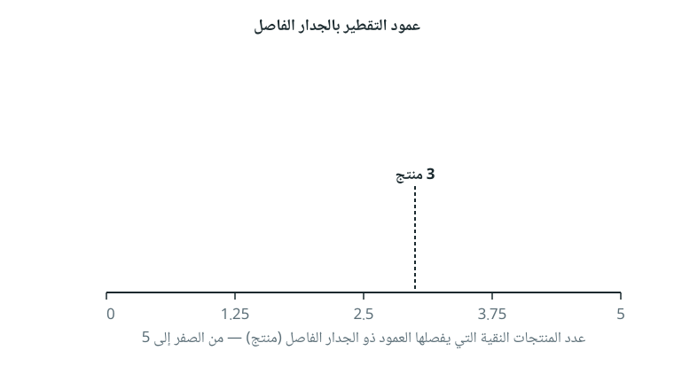

عمود التقطير بالجدار الفاصل
Dividing-wall column
عمود تقطير واحد يقسمه جدار رأسي داخلي إلى قسمين متجاورين، فيفصل مزيجًا ثلاثيًّا إلى ثلاثة منتجات نقية في جسم عمود واحد بدل سلسلة من عمودين، مع مكثّف واحد ومبخّر واحد.
عمود التقطير بالجدار الفاصل هو عمود واحد يقطع تجويفه جدار رأسي غير نافذ يمتد على طول جزء من ارتفاعه، فينقسم العمود إلى قسمين متجاورين يتصلان عند طرفيهما العلوي والسفلي. يُغذّى المزيج إلى أحد القسمين، ويُسحب المنتج الأوسط من الطرف العلوي للجدار، بينما يُسحب المنتجان الخفيف والثقيل من قمة العمود وقاعه. الأثر الحراري هو إلغاء إعادة الخلط: في سلسلة عمودين تقليدية يعاد خلط المنتج الأوسط مع ما حوله في العمود الثاني فتُهدر طاقة في فصل مكوّنات سبق فصلها، أما الجدار الفاصل فيمنع هذا الخلط لأن القسمين متوازيان لا متتاليان. ويصف كايبل هذا الترتيب بأنه يفصل مزيجًا إلى ثلاثة أو أربعة أجزاء نقية، وبأن تكلفته الاستثمارية واستهلاكه للطاقة أقل من ترتيبات الأعمدة الأخرى. ويُعدّ العمود بالجدار الفاصل من أشهر أمثلة التكثيف العملي في التقطير، إذ يستبدل جسمَي عمود بمكثّفين ومبخّرين بجسم واحد بمكثّف واحد ومبخّر واحد.
كيف تعمل الظاهرة؟
يُقسَم تجويف العمود بجدار رأسي غير نافذ إلى قسمين متجاورين يتصلان عند القمة والقاع. يُغذّى المزيج إلى أحد القسمين، فيصعد البخار ويهبط السائل داخل كل قسم على حدة، ويُسحب المنتج الأوسط من الطرف العلوي للجدار. الأثر الحراري أن القسمين متوازيان لا متتاليان، فلا يعاد خلط المنتج الأوسط مع المكوّنات التي فُصل عنها، وهو الخلط الذي يستهلك طاقة إضافية في سلسلة العمودين التقليدية.
العلاقة بالأرقام
يفصل العمود ذو الجدار الفاصل ثلاثة منتجات نقية في جسم واحد، ويمكن أن يصل إلى أربعة، مقابل منتجين في العمود التقليدي. ويُقدَّر الوفر بنحو 30% في رأس المال والطاقة مقارنة بسلسلة الفصل التقليدية، مع مكثّف واحد ومبخّر واحد بدل اثنين من كل منهما. هذه أرقام تقديرية عامة وردت في متن الدراسة المرجعية، وليست قياسًا على وحدة بعينها.
مفاهيم متقاربة
يختلف عن سلسلة العمودين في التوازي لا التتالي، وعن العمود ذي السحب الجانبي في أن الجدار يوفّر قسمًا مستقلًّا كاملًا للمنتج الأوسط بدل سحب محدود النقاء من عمود واحد. ويختلف عن التقطير الاستخلاصي في أنه لا يضيف مكوّنًا ثالثًا، وعن التقطير الأزيوتروبي في أنه لا يعتمد على كسر أزيوتروب بمُدخِل جديد، بل على إعادة ترتيب هندسة العمود نفسه.
حدود التطبيق
لا يصلح العمود ذو الجدار الفاصل إلا لمزيج يمكن فصله أصلًا بالتقطير الاعتيادي، ولا يكسر أزيوتروبًا ولا يفصل مكوّنين متطايرين بالتساوي. ويشترط أن يكون المنتج الأوسط هو الأقل طلبًا في السوق عادةً، لأن مرونته في تغيير نسب المنتجات محدودة. والجدار يزيد تعقيد التصميم والتحكم، ويجعل توزيع البخار والسائل بين القسمين حرجًا؛ وأرقام الوفر المذكورة تقديرية عامة لا ضمان لوحدة بعينها.

| الكمية | القيمة | المصدر |
|---|---|---|
| عدد المنتجات النقية التي يفصلها العمود ذو الجدار الفاصل | 3 منتج | [1] |
| الوفر في رأس المال والطاقة مقارنة بسلسلة الفصل التقليدية | 30 % | [2] |
| عدد المبخّرات في العمود ذي الجدار الفاصل مقابل سلسلة تقليدية | 1 مبخّر | [2] |
المصادر
- 1 Distillation columns with vertical partitions — Wiley-VCH (1987). doi.org/10.1002/ceat.270100112 · اطُّلع عليه 2026-11-28
- 2 Design and Control of Extractive Dividing Wall Column for Separating Dipropyl Ether/1-Propyl Alcohol Mixture — MDPI (Processes) (2022). doi.org/10.3390/pr10040665 · اطُّلع عليه 2026-11-28
- 3 Dividing wall columns in chemical process industry: A review on current activities — Elsevier (Separation and Purification Technology) (2011). doi.org/10.1016/j.seppur.2011.05.009 · اطُّلع عليه 2026-11-28
استشهد بهذا المصطلح
الصيغتان مبنيتان من بيانات الصفحة نفسها: العنوان والتاريخ ورابط النسخة المنشورة.
عمود التقطير بالجدار الفاصل — Dividing-wall column. (2026). ديوان المعرفة — انفراد. https://infiradev.com/diwan/terms/term-dividing-wall-column.html
@misc{term-dividing-wall-column2026,
title = {عمود التقطير بالجدار الفاصل},
titleaddon = {Dividing-wall column},
howpublished = {{ديوان المعرفة — انفراد} — مرجع علمي عربي},
year = {2026},
url = {https://infiradev.com/diwan/terms/term-dividing-wall-column.html},
urldate = {2026-11-28},
note = {مراجعة علمية: Abdullah Al-Huwaidi}
}
راجعه: Abdullah Al-Huwaidi · 2026-11-28 · آخر تحديث 2026-11-28